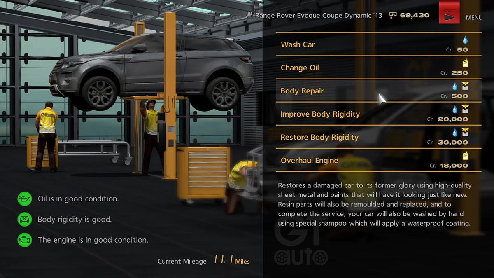

En Gran Turismo, un "setup" se refiere a la calibración mecánica específica de un vehículo de carreras para adaptarse con precisión a cada trazado, condición de asfalto y estilo de conducción.
Esta configuración incluye el equilibrio milimétrico de la amortiguación, barras estabilizadoras, reparto de frenada, caída de neumáticos (camber), relaciones de caja de cambios y paquete aerodinámico.
El objetivo primordial es exprimir el máximo agarre, garantizar estabilidad en frenadas a fondo y conseguir el mejor tiempo por vuelta posible respetando los límites de rendimiento PR de la competencia.

Altura de marcha, dureza de muelles, amortiguadores en compresión/extensión y estabilizadoras para mitigar el sobreviraje o subviraje.
Relación de velocidades adaptada a las rectas más largas y tramos revirados para mantener siempre el motor en su rango óptimo de torque.
Carga aerodinámica delantera/trasera y tarado de diferencial autoblocante en aceleración y frenada para traccionar sin derrapes.
Página creada para la comunidad de Gran Turismo 6 (PS3) por Ricardo Polanco